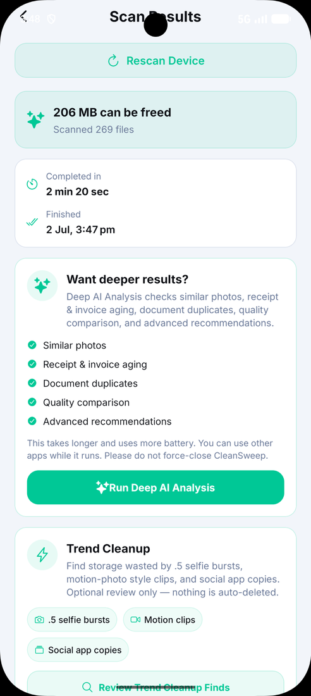
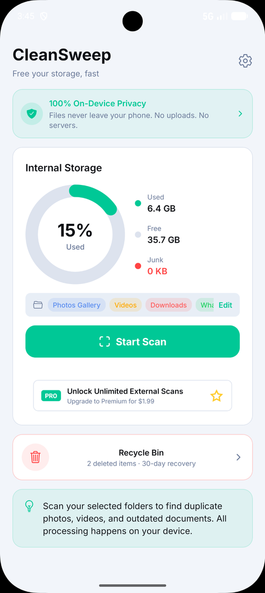
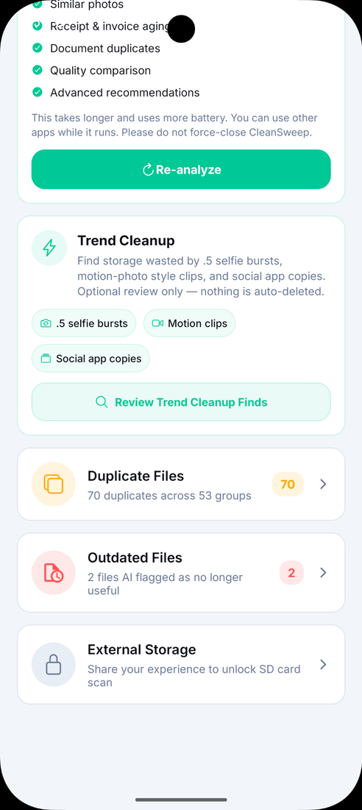
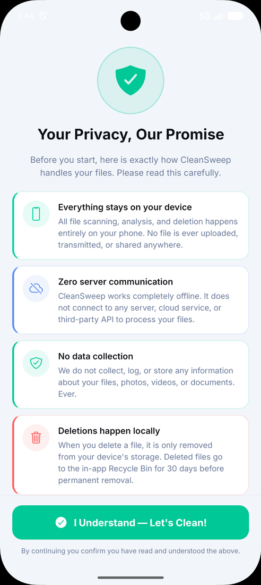
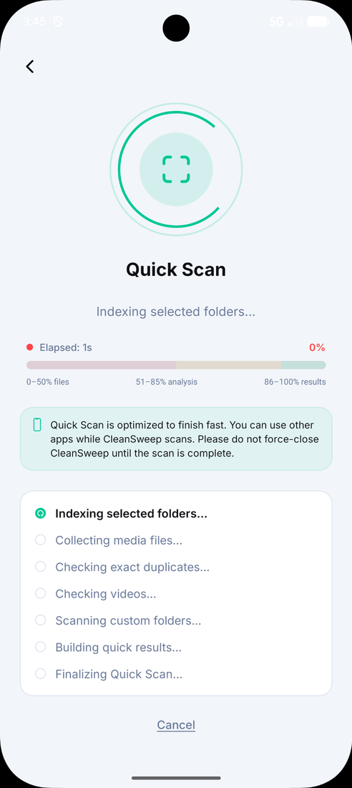
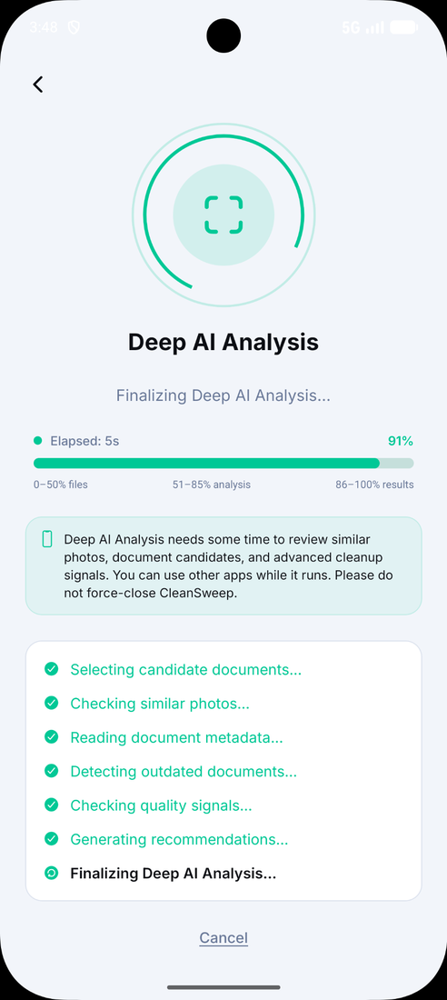
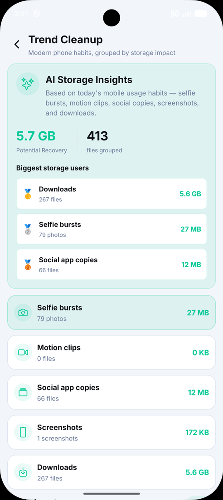

Clean More.
Save More.
CleanSweep helps you find duplicate files, large files, old documents and storage clutter so your Android phone feels lighter, faster and easier to manage.



Powerful Features. Total Control.
Everything you need to clean your storage — with privacy you can trust.
On-Device Privacy
All scanning, analysis and deletion happens on your phone. No uploads.
Works Offline
No server, cloud service or third-party API is needed to process files.
AI Deep Analysis
Detects similar photos, receipts, invoices, document duplicates and quality issues.
Recycle Bin
Deleted files stay in the in-app Recycle Bin for 30 days before permanent deletion.
Custom Folder Scan
Scan selected folders including Downloads, Documents and WhatsApp media.
External Storage
Unlock SD card scanning through sharing or Lifetime Premium.
Simple. Modern. Easy to use.
Choose folders, run Quick Scan, review Deep AI recommendations, and delete only what you approve.
Your phone will thank you.
CleanSweep uses the same clean mint, white, green and soft card UI across the app and website.




Questions before you clean?
Does CleanSweep upload my files?
No. CleanSweep is designed around on-device analysis. Your files remain on your Android device.
Can I review files before deleting?
Yes. CleanSweep highlights candidates and lets you preview and decide before cleanup.
What does Deep AI Analysis do?
It looks for similar photos, duplicate documents, outdated files, quality signals and smarter cleanup recommendations.
Where do deleted files go?
Deleted files are held in the in-app Recycle Bin for 30 days before permanent removal.